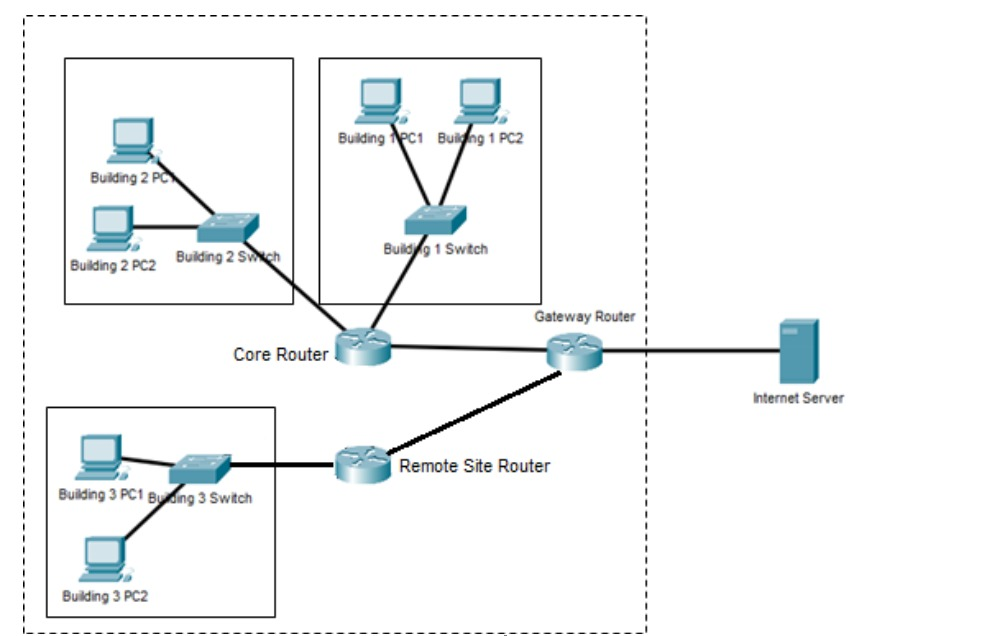
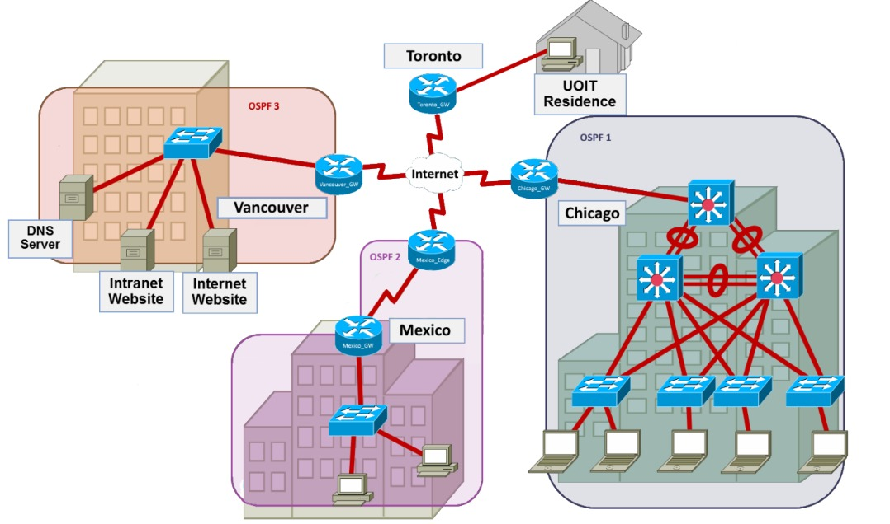
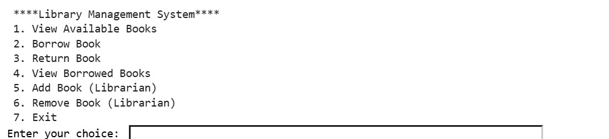
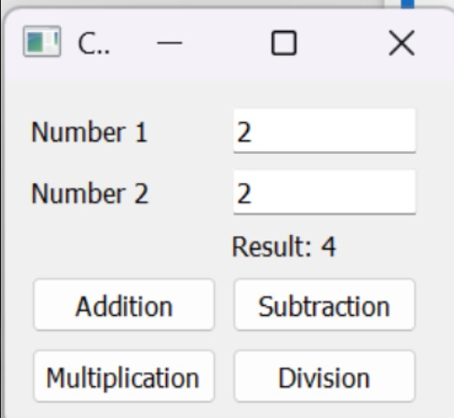

My Projects
Corporate Network Design — Group Project

Worked with a partner to design and simulate a corporate network connecting three buildings using Cisco Packet Tracer. The project involved IPv4 addressing, subnetting, static routing, and testing network connectivity between buildings and an Internet server.
Multi-Site Network Design — Group Project

Collaborated with a team of four to design and implement a corporate network connecting Toronto, Vancouver, Chicago, and Mexico using Cisco Packet Tracer. I was responsible for building the entire network topology, configuring the Vancouver and Chicago networks, and ensuring successful connectivity across all branches. The project involved VLANs, inter-VLAN routing, OSPF, BGP, and network connectivity testing.
Library Management System

A python-based Library Management System that allows users to borrow, return, and manage books through a console interface. The project uses object-oriented programming concepts, including classes and inheritance, CSV file handling, exception handling, and overdue penalty calculations.
Simple Calculator Application — Python GUI

A simple calculator application using Python and PyQt5. The application features a graphical user interface that allows users to perform addition, subtraction, multiplication, and division. It also includes input fields, interactive buttons, and error handling for division by zero.